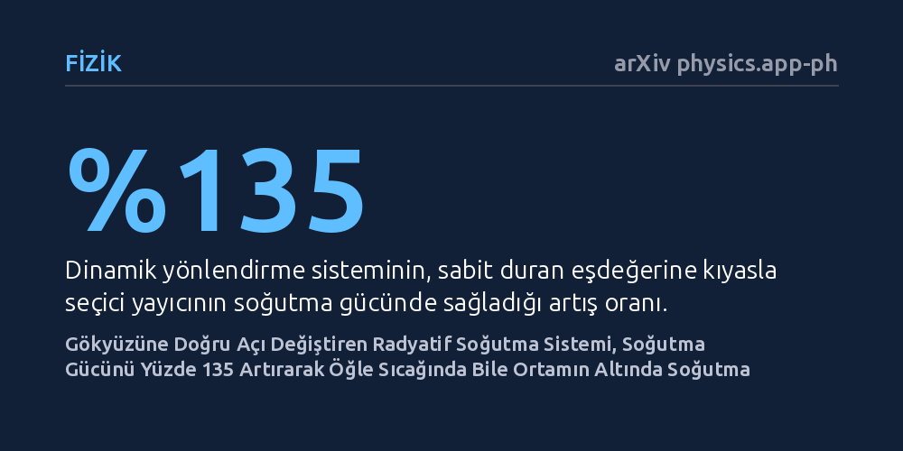

FIZIK · arXiv physics.app-ph · 2026-09-11
Güneşin ve bulutların hareketine uyum sağlayamayan sabit radyatif soğutma panellerine çözüm arayan araştırmacılar, ayçiçeklerinden esinlenerek açısını dinamik değiştiren bir yönlendirme sistemi geliştirdi. Bu sistem, seçici yayıcı panellerde soğutma gücünü yüzde 135 artırırken sıcak öğle vakitlerinde dahi ortam sıcaklığının altına inmeyi başardı.
Pahalı ve üretimi zor gelişmiş yansıtıcı malzemelere olan zorunlu bağımlılığı azaltarak, binaların elektrik harcamadan gün boyu pasif olarak soğutulabileceğini gösteriyor.

Klimalar ve soğutma sistemleri, modern dünyada elektrik şebekeleri üzerindeki en büyük yüklerden birini oluşturuyor. Buna alternatif olarak geliştirilen pasif radyatif soğutma teknolojisi, cisimlerin kendi ısısını kızılötesi ışınım yoluyla doğrudan uzayın soğukluğuna yayması esasına dayanıyor. Ancak bugüne kadar geliştirilen sistemlerin neredeyse tamamı binaların çatılarına yatay ve sabit biçimde yerleştiriliyordu. Bu sabit tasarım; güneşin gün içindeki açısı değiştikçe ve bulutlar geçtikçe soğutma potansiyelinin büyük kısmının kaybedilmesine neden oluyordu.
Güneş ışınlarının dik geldiği öğle saatlerinde, sabit bir panel güneşten gelen yoğun ısıyı soğurmaktan kaçınamıyor. Araştırmacılar, doğada güneşi takip eden ayçiçeklerinin hareket mekanizmasından (helyotropizm) esinlenerek yeni bir yaklaşım geliştirdi. Soğutucu panel sürekli aynı açıda kalmak yerine açısını gökyüzünün en uygun noktasına çevirdiğinde, hem doğrudan gelen güneş ışığından kaçınabiliyor hem de ısısını atmosfere boşaltabileceği en açık gökyüzü alanına yönelebiliyor.
Araştırma ekibi bu fikri sınamak için "dinamik gökyüzü görüş faktörü yönlendirme sistemi" (DSVFS) adını verdikleri hareketli bir mekanizma kurdu. Bu mekanizma, radyatif soğutma panelini gün boyunca sabit bir açıda tutmak yerine, güneşin konumuna ve çevresel ışıma koşullarına göre sürekli en ideal açıya yönlendiriyor. Sistem böylece panelin gökyüzünü görme oranını en üst düzeye çıkarırken, doğrudan güneş ışığına maruz kalmasını en aza indiriyor.
Deney aşamasında ekip iki farklı malzeme türünü test etti: Birincisi, güneş ışığını yansıtıp yalnızca belirli kızılötesi dalga boylarında ışıma yapan özel "seçici yayıcı" malzeme; ikincisi ise güneş ışığını fazlasıyla soğuran sıradan "siyah cisim" benzeri bir yayıcıydı. Bu malzemeler, hava sıcaklığının zirve yaptığı sıcak bir öğle vaktinde hareketli sistem üzerine yerleştirilerek sıcaklık değişimleri ve soğutma güçleri ölçüldü. Deneysel ölçümlerin ardından, küresel ölçekte farklı iklim koşullarına sahip kentler için teorik enerji tüketim modelleri çalıştırıldı.
Deney sonuçları, yönlendirilebilir mekanizmanın soğutma performansında belirgin bir sıçrama yarattığını gösterdi. Seçici yayıcı malzeme hareketli sisteme bağlandığında, sabit duran klasik panellere kıyasla soğutma gücünde yüzde 135'lik bir artış elde edildi. Panel, açısını güneşten kaçırıp en verimli gökyüzü penceresine çevirerek gün boyunca kesintisiz bir soğutma kapasitesine ulaştı.
Daha da dikkat çekici olan bulgu, neredeyse siyah cisim özelliği gösteren sıradan yayıcı malzemede gözlendi. Normal koşullarda güneş altında hızla ısınması beklenen bu malzeme, kavurucu bir öğle vaktinde dahi dinamik açı sayesinde çevresindeki ortam havasından daha soğuk kalmayı başardı. Sistem bu sayede, bugüne kadar pasif soğutma için zorunlu görülen "aşırı yüksek güneş yansıtıcılığı" şartını hafifleterek malzeme kısıtlarını esnetti.
Araştırmacılar, elde ettikleri verileri dünya çapındaki çeşitli şehirlerin iklim verileriyle birleştirerek yıllık enerji tasarrufu potansiyelini modelledi. Bu simülasyonlar, sistemin binalarda kullanılması durumunda metrekare başına yıllık 200 kilovatsaate varan bir elektrik tasarrufu sağlayabileceğine işaret ediyor. Özellikle soğutma ihtiyacının yüksek olduğu sıcak iklim bölgelerinde, klima kullanımını kayda değer ölçüde azaltma potansiyeli bulunuyor.
Bununla birlikte çalışmanın henüz hakem denetiminden geçmemiş bir önbaskı olduğunu göz önünde bulundurmak gerekiyor. Ayrıca hareketli mekanik parçaların bakım gereksinimi, rüzgar dayanımı ve motorların tüketeceği ek enerji hesaba katılmalıdır. Yine de bu çalışma, pasif soğutmada yalnızca malzeme kimyasına odaklanmak yerine mekanik yönlendirmenin de verimi iki katından fazla artırabileceğini somut biçimde ortaya koyuyor.